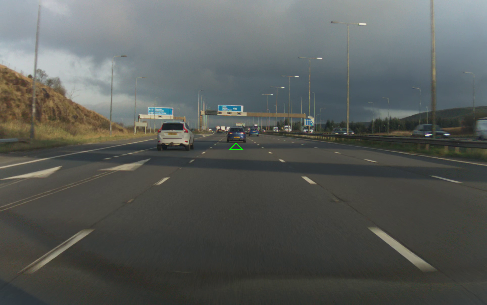

Lead Car Detection

This project aimed to detect the 3D position of the lead car. A Comma3X was utilized for data collection, and was trained on 1688595 images.
This project aimed to detect the 3D position of the lead car. A Comma3X was utilized for data collection, and was trained on 1688595 images.